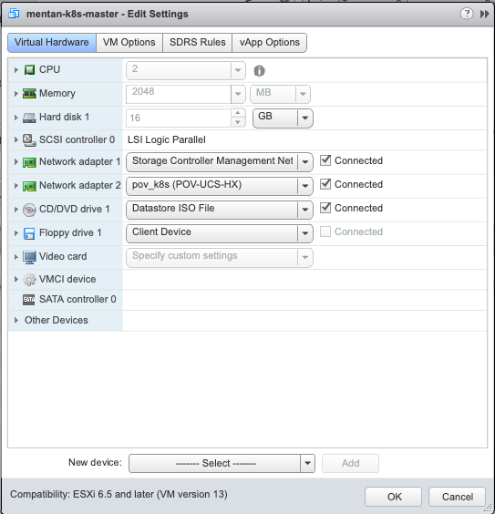

K8s安装
1. Ubuntu VM安装
ubuntu vm 参数
Ubuntu 16.04.6 ubuntu-16.04.6-server-amd64.iso
Master/Worker:
2 GB RAM
2 Core of CPU
16G HDD
VM创建两个NIC， 一个连接OOB网络， 另一个备用
VM安装ubuntu操作系统，完成后创建snapshot，并clone两个作为worker node.
2. 下载acc-provision工具，生成ACI配置
从下面的链接下载acc-provison工具
APIC OpenStack and Container Plugins
对应Ubuntu的文件格式为 dist-debs-4.1.1.2.tar.gz
通过scp将下载的文件上传至master VM
scp dist-debs-4.1.1.2.tar.gz mentan@10.75.53.88:/home/mentan
解压缩得到.deb文件
tar –xzf dist-debs-4.1.1.2.tar.gz
acc-provision_4.1.1.2-13_amd64.deb
3. 安装ACI CNI Plugin
sudo -i
cp /home/mentan/acc-provision_4.1.1.2-13_amd64.deb .
apt update
apt -f install ./acc-provision_4.1.1.2-13_amd64.deb
4. 生成ACI CNI Plugin配置文件
acc-provision --flavor=kubernetes-1.13 --sample > acc-config.yaml
5. 编辑ACI CNI Plugin配置文件 (注意修改部分的(!)标记说明)
Note: yaml文件一定要注意缩进，否则会报错！
#
aci_config:
system_id: pov_k8s # Every opflex cluster must have a distict ID
apic_hosts: # List of APIC hosts to connect for APIC API
- 10.75.53.121
vmm_domain: # Kubernetes container domain configuration
encap_type: vxlan # Encap mode: vxlan or vlan
mcast_range: # Every opflex VMM must use a distinct range
start: 225.20.1.1
end: 225.20.255.255
nested_inside: # Include if nested inside a VMM;
# required for CloudFoundry
# supported for Kubernetes
type: vmware # Specify the VMM vendor (supported: vmware)
name: POV-UCS-HX # Specify the name of the VMM domain
# The following resources must already exist on the APIC.
# They are used, but not created, by the provisioning tool.
aep: POV-UCS-HX # The AEP for ports/VPCs used by this cluster
vrf: # This VRF used to create all kubernetes EPs
name: default
tenant: common # This can be system-id or common
l3out:
name: POV-COMMON-L3OUT # Used to provision external IPs
external_networks:
- EXT # Used for external contracts
#custom_epgs: # List of additional endpoint-group names
# - custom_group1 # to configure for use with annotations
# - custom_group2
#isolation_segments: # List of names of isolation segments
# - name: iso-seg-1 # and the subnets to use (CloudFoundry only)
# subnet: 10.11.0.1/24
# - name: iso-seg-2
# subnet: 10.11.1.1/24
#
# Networks used by ACI containers
#
net_config:
node_subnet: 172.16.0.1/24 # Subnet to use for nodes
pod_subnet: 172.16.1.1/24 # Subnet to use for Kubernetes
# Pods/CloudFoundry containers
#vip_subnet: 10.3.0.1/16 # Subnet to use for virtual IPs
# (CloudFoundry only)
extern_dynamic: 172.16.2.1/24 # Subnet to use for dynamic external IPs
extern_static: 172.16.3.1/24 # Subnet to use for static external IPs
node_svc_subnet: 172.16.4.1/24 # Subnet to use for service graph
kubeapi_vlan: 4001 # The VLAN used by the physdom for nodes
# (Kubernetes only)
service_vlan: 4003 # The VLAN used by LoadBalancer services
infra_vlan: 4093 # The VLAN used by ACI infra
#interface_mtu: 1600 # min = 1280 for ipv6, max = 8900 for VXLAN
#
# Configuration for container registry
# Update if a custom container registry has been setup
#
registry:
image_prefix: noiro # e.g: registry.example.com/noiro
# image_pull_secret: secret_name # (if needed)
6. 生成ACI配置和新的CNI plugin配置文件
acc-provision --flavor=kubernetes-1.13 -a -u mentan -p xxxxxx -c acc-config.yaml -o aci-cni-config.yaml
完成后，ACI上自动生成下列配置： tenant/EPG
contract
BD
physical domain&vlan pool
AAEP变更
K8S VMM
7. VM 设置 (包括Master和worker nodes)
修改VM Hostname
vi /etc/hostname
vi /etc/hosts
restart vm
进入VCenter，将VM的第二NIC的port-group改为yaml文件中system_id对应的port-group

设置 NIC ip address,
sudo vi /etc/network/interfaces
#OOB Connection
auto ens160
iface ens160 inet static
address 10.75.53.88
netmask 255.255.255.0
up route add -net 10.0.0.0/8 gw 10.75.53.1
dns-nameservers 64.104.123.245
# Interface connected to ACI
auto ens192
iface ens192 inet manual
mtu 9000
# ACI Infra VLAN
auto ens192.4093
iface ens192.4093 inet dhcp
mtu 9000
up route add -net 224.0.0.0/4 dev ens192.4093
vlan-raw-device ens192
# Node Vlan (kubeapi_vlan)
auto ens192.4001
iface ens192.4001 inet static
address 172.16.0.11
netmask 255.255.255.0
mtu 9000
vlan-raw-device ens192
up route add default gw 172.16.0.1
dns-nameservers 64.104.123.245
设置DHCP Client, 将XX:XX:XX:XX:XX:XX修改为ens192的MAC地址
vi /etc/dhcp/dhclient.conf
send dhcp-client-identifier 01:XX:XX:XX:XX:XX:XX;
request subnet-mask, domain-name, domain-name-servers, host-name;
send host-name = gethostname();
option rfc3442-classless-static-routes code 121 = array of unsigned integer 8;
option ms-classless-static-routes code 249 = array of unsigned integer 8;
option wpad code 252 = string;
also request rfc3442-classless-static-routes;
also request ms-classless-static-routes;
also request static-routes;
also request wpad;
also request ntp-servers;
timeout 10;
修改完毕后重启网络服务或重启VM
systemctl restart networking
检查网络设置
mentan@master:~$ ip route |grep ens192
default via 172.16.100.1 dev ens192.4001
10.0.0.0/16 dev ens192.4093 proto kernel scope link src 10.0.152.64
172.16.100.0/24 dev ens192.4001 proto kernel scope link src 172.16.100.11
224.0.0.0/4 dev ens192.4093 scope link
mentan@master:~$
mentan@master:~$ ip addr |grep ens192 |grep inet
inet 10.0.152.64/16 brd 10.0.255.255 scope global ens192.4093
inet 172.16.100.11/24 brd 172.16.100.255 scope global ens192.4001
mentan@master:~$
mentan@master:~$ ip link |grep ens192 |grep mtu
3: ens192: <BROADCAST,MULTICAST,UP,LOWER_UP> mtu 9000 qdisc mq state UP mode DEFAULT group default qlen 1000
4: ens192.4093@ens192: <BROADCAST,MULTICAST,UP,LOWER_UP> mtu 9000 qdisc noqueue state UP mode DEFAULT group default qlen 1000
5: ens192.4001@ens192: <BROADCAST,MULTICAST,UP,LOWER_UP> mtu 9000 qdisc noqueue state UP mode DEFAULT group default qlen 1000
mentan@master:~$
此时，node EPG中应该可以看到node learned，node也应该可以ping通网关
8. 安装Docker (all nodes)
apt install docker.io
docker pull busybox
9. 安装Kubeadm (all nodes)
添加k8s repository:
apt-get update && apt-get install -y apt-transport-https curl
curl -s https://packages.cloud.google.com/apt/doc/apt-key.gpg | apt-key add -
cat <<EOF >/etc/apt/sources.list.d/kubernetes.list
deb http://apt.kubernetes.io/ kubernetes-xenial main
EOF
apt-get update
安装kubectl, kubeadm, kubernetes-cni (1.13.5)
apt install -y kubeadm=1.13.5-00 kubelet=1.13.5-00 kubectl=1.13.5-00 kubernetes-cni=0.7.5-00
10. Disable SWAP (all nodes)
swapoff -a
vi /etc/fstab
注释下面的swap条目，
#/dev/mapper/master--vg-swap_1 none swap sw 0 0
11. 初始化master node
kubeadm init --pod-network-cidr=172.16.1.1/24 --service-cidr=172.16.5.1/24
<snip>
Your Kubernetes master has initialized successfully!
To start using your cluster, you need to run the following as a regular user:
mkdir -p $HOME/.kube
sudo cp -i /etc/kubernetes/admin.conf $HOME/.kube/config
sudo chown $(id -u):$(id -g) $HOME/.kube/config
You should now deploy a pod network to the cluster.
Run "kubectl apply -f [podnetwork].yaml" with one of the options listed at:
https://kubernetes.io/docs/concepts/cluster-administration/addons/
You can now join any number of machines by running the following on each node
as root:
kubeadm join 172.16.0.11:6443 --token pvbozs.zbr8n5fyv061asja --discovery-token-ca-cert-hash sha256:6afb92a946945451d60378d2441ca21ca819681a68afe22e7414f5128bbc9edf
以普通用户执行下面的命令：
mkdir -p $HOME/.kube
sudo cp -i /etc/kubernetes/admin.conf $HOME/.kube/config
sudo chown $(id -u):$(id -g) $HOME/.kube/config
12. worker node加入集群
在所有worker node上以root用户执行以下指令：
kubeadm join 172.16.100.11:6443 --token ofbxss.x77763eisajl09dc --discovery-token-ca-cert-hash sha256:ad732e4935337bfce65d96cf2004247ec23b222416881487c129ee52a753bee1
在master node上检查cluster状态， 状态NotReady是正常的，因为CNI还未安装
mentan@master:~$ kubectl get nodes
NAME STATUS ROLES AGE VERSION
master NotReady master 19m v1.13.5
worker1 NotReady <none> 10m v1.13.5
13. 部署K8S Dashboard
本处参考了下面的链接：
缺省K8s不会部署Dashboard，可以使用下面的命令部署
kubectl apply -f http://mirror.faasx.com/kubernetes/dashboard/master/src/deploy/recommended/kubernetes-dashboard.yaml
编辑dashboard service，将type从NodePort改为LoadBalancer，实现Dashboard的外网访问
kubectl edit service kubernetes-dashboard -n kube-system
通过暴露的external-ip访问Dashboard，出现下面的登录窗口
通过上面参考链接中的方法生成admin token，输入后进入Dashboard